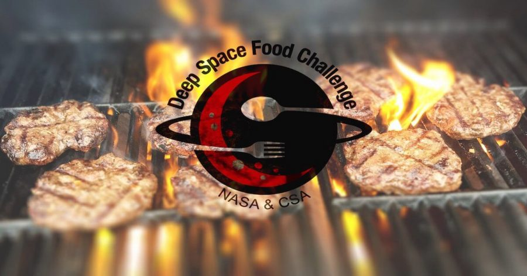

နာဆာ အဖွဲ့ကြီးဟာ လကမ္ဘာနဲ့ အင်္ဂါဂြိုဟ် ပေါ်ကို အာကာသ ယာဉ်မှူးတွေ နှစ်ရှည်လများ စေလွှတ်ဖို့ ကြိုးစားနေစဉ် တချိန်ထဲ မှာပဲ ဒီလို ကာလရှည် အာကာသ ခရီးတွေမှာ အဓိက အကျဆုံး လိုအပ်ချက် တစ်ခုဖြစ်တဲ့ အစာ ပြဿနာ ကိုလဲ ပြေလည်အောင် ဖြေရှင်းနိုင်ဖို့ ကြိုးစားနေပါတယ်။
အဓိက ကတော့ လိုအပ်တဲ့ အစာအဟာရ တွေကို ကမ္ဘာမြေကနေ သယ်ဆောင် သွားရတာမျိုး မဟုတ်ပဲ ယာဉ်ပေါ်မှာ (သို့) ရောက်ရှိ အခြေချရာ အရပ် ဒေသမှာတင် လုံလုံလောက်လောက် ထုတ်လုပ် နိုင်ဖို့ ရည်ရွယ်တာ ဖြစ်ပါတယ်။
ယခုအခါ နာဆာ အဖွဲ့ကြီးဟာ ကနေဒီယန် အာကာသ အေဂျင်စီ (Canadian Space Agency) နဲ့ ပူးပေါင်းပြီး အာကာသ ထဲမှာ အစာ အဟာရ ထုတ်လုပ်နိုင်မယ့် နည်းလမ်းတွေ တည်ထွင်ဖို့ ပြိုင်ပွဲ တစ်ခုကို စီစဉ် ကျင်းပနေတယ်လို့ ကြေငြာ ထားပါတယ်။
ဒီပြိုင်ပွဲရဲ့ အဓိက ရည်ရွယ်ချက် ကတော့ အာကာသ ထဲမှာ ကုန်ကြမ်း လိုအပ်ချက် အနည်းဆုံး အသုံးပြုပြီး စွန့်ပစ် ပစ္စည်းလဲ အနည်းဆုံးပဲ ထွက်ရှိမယ့် အစာ ထုတ်လုပ်ရေး နည်းလမ်းသစ် တွေကို ရှာဖွေ ဖော်ထုတ် နိုင်ဖို့ပဲ ဖြစ်ပါတယ်။ ဒါ့အပြင် ဒီ ထုတ်လုပ်တဲ့ နည်းလမ်းဟာ အာကာသ ထဲမှာ ရေရှည် တည်တံ့နိုင်မယ့် နည်းလမ်းလဲ ဖြစ်ဖို့ လိုအပ်ပါတယ်။
အခု ပြိုင်ပွဲကို Deep Space Food Challenge လို့ အမည်ပေးထားပါတယ်။ ဒီ ပြိုင်ပွဲမှာ ပြိုင်ပွဲဝင်မယ့် အသင်းတွေ အနေနဲ့ အာကာသ ထဲမှာ အစားအသောက် ထုတ်လုပ်နိုင်မယ့် နည်းလမ်းတွေကို ဒီဇိုင်းထုတ်၊ တည်ဆောက်ပြီး လက်တွေ့ သရုပ်ပြဖို့ ဖြစ်ပါတယ်။
ဒီလို အာကာသ ထဲမှာ အစာထုတ်ဖို့ လိုအပ်တဲ့ အဓိက အချက်ကတော့ အစားအသောက်တွေဟာ နှစ်ရှည်လများ သိုလှောင်ထားရင် တဖြည်းဖြည်း အဟာရ ဓါတ်တွေ လျော့နည်း သွားကြပါတယ်။ ဒီတော့ မားစ် ဂြိုဟ်ကို သွားတဲ့ ခရီးစဉ် လိုမျိုး နှစ်ရှည်လများ သွားရမယ့် ခရီးစဉ် မျိုးမှာ လိုအပ်တဲ့ အစားအသောက်တွေ အားလုံးကို ကမ္ဘာမြေ ကနေ ထုပ်ပိုးပြီး သယ်ဆောင်သွားရင် အာကာသ ယာဉ်မှူးတွေ လိုအပ်တဲ့ အာဟာရ အပြည့်အဝ ပေးနိုင်စွမ်း ရှိမှာ မဟုတ်ပါဘူး။
နောက်တခုက အစားအသောက် မပြတ်တောက် သွားရေး (Food security) ပဲ ဖြစ်ပါတယ်။ ကမ္ဘာ ပြင်ပက အခြေချ ကိုလိုနီ တွေကို တင်ပို့ပေးတဲ့ အစားအသောက်နဲ့ ရိက္ခာ လမ်းကြောင်း တနည်းနည်းနဲ့ အခက်အခဲ ဖြစ်ခဲ့မယ်ဆို ဒီ အခြေချ ကိုလိုနီက လူသားတွေ အနေနဲ့ ရောက်တဲ့ နေရာမှာ အစားအသောက် ထုတ်လုပ်ပြီး ဆက်လက် အသက်ရှင် နိုင်ဖို့လဲ လိုအပ်ပါတယ်။
ဒီ နည်းလမ်း သစ်တွေဟာ အာကာသ ခရီးရှည် တွေမှာတင် အသုံးဝင်မှာ မဟုတ်ပါဘူး။ လက်ရှိ ကမ္ဘာပေါ်က သဘာဝ ဘေးအန္တရာယ် ကြုံတွေ့ရတဲ့ အရပ် ဒေသတွေမှာလဲ အစားအသောက် ထုတ်လုပ်ဖို့ အသုံးဝင်နိုင် ပါတယ်လို့ နာဆာရဲ့ ကြေငြာချက်မှာ ဖေါ်ပြ ထားပါတယ်။ အခု နည်းပညာ အသစ်တွေဟာ ကမ္ဘာမြေ ပေါ်က သဘာဝ ဘေးအန္တရာယ် တွေကို လူသားခြင်း စာနာထောက်ထားမှု အကူအညီ ပေးရာမှာလဲ အလွယ်တကူ အမြန်ဆုံး အစားအသောက် ပို့ဆောင် ထုတ်လုပ်ပေးနိုင်လိမ့်မယ်လို့ ဆိုပါတယ်။
ပြီးခဲ့တဲ့ ၂၀၂၁ ခုနှစ်က ပြုလုပ်ခဲ့တဲ့ ပထမ အဆင့် ပြိုင်ပွဲရဲ့ ရလဒ်တွေကို အောက်တိုဘာ လက ကြေငြာခဲ့ပါတယ်။ သည် ပထမ အဆင့်မှာ စုစုပေါင်း အသင်း ၁၈ သင်းကို စကာတင် ရွေးချယ် ခဲ့ပြီး သူတို့ရဲ့ အိုင်ဒီယာကို လက်တွေ့ ပြသရာမှာ အသုံးပြုဖို့ စုစုပေါင်း ဒေါ်လာ ၄၅၀,၀၀၀ ထောက်ပံ့ ခဲ့ပါတယ်။ ဒီ အထဲမှာ နိုင်ငံတကာ အသင်းပေါင်းက ၁၀ သင်းတောင် ပါဝင် ခဲ့ပါတယ်။
ကနေဒီယန် အာကာသ အေဂျင်စီ ကလဲ ဒီ နိုင်ငံတကာ အသင်း ၁၀ သင်းကို တစ်သင်း ကို ကနေဒါ ဒေါ်လာ ၃၀,၀၀၀ စီ ထောက်ပံ့ခဲ့ပါတယ်။ ဒီအသင်းတွေဟာ အခုရရှိတဲ့ အထောက်အပံ့ တွေနဲ့ သူတို့ရဲ့ အိုင်ဒီယာကို လက်တွေ့ အကောင်အထည် ပြသရာမှာ အသုံးပြု ရမှာ ဖြစ်ပါတယ်။
အခု အဆင့် ၂ ပြိုင်ပွဲကိုတော့ ယခင် အနိုင်ရ အသင်းတွေတင် မကပဲ အသင်းသစ် တွေကိုလဲ ပါဝင်ယှဉ်ပြိုင်ဖို့ ဖိတ်ခေါ် ထားပါတယ်။ ဒီ အဆင့်မှာတော့ အသင်းတွေဟာ အစာ ထုတ်လုပ်တဲ့ နည်းစနစ် နမူနာကို တင်ပြပြီး လက်တွေ့ ထုတ်လုပ် ပြသ ကြရမှာ ဖြစ်ပါတယ်။
ဒီအဆင့်မှာ ရွေးချယ် ခံရတဲ့ အသင်းတွေဟာ ဆုကြေး အမေရိကန် ဒေါ်လာ တစ်သန်းအထိ ရရှိနိုင်မယ်လို့ နာဆာရဲ့ ကြေငြာချက် အရ သိရပါတယ်။
ဒီ ပြိုင်ပွဲအတွက် အဆိုပြုလွှာ တင်သွင်းရမယ့် နောက်ဆုံးရက်က ဖေဖော်ဝါရီ ၂၈ ရက်နေ့လို့ သိရပါတယ်။
အသေးစိတ်ကို အောက်က နာဆာရဲ့ မူရင်း ထုတ်ပြန်ချက်မှာ ဖတ်ရှုနိုင်ပါတယ်။
Reference: NASA Offers $1 Million for Innovative Systems to Feed Tomorrow’s Astronauts | NASA
ဆုကြေး ဒေါ်လာ ၁ သန်းပေးမယ့် နာဆာရဲ့ ပြိုင်ပွဲ

January 27, 2022
Other Posts
- ကွေဆာ (သို့) စကြာဝဠာရဲ့ အတောက်ပဆုံး အရာဝတ္ထုများ
- Black Hole တွေကနေ တောက်ပတဲ့ အလင်းရောင် ဘယ်လို ထွက်လာလဲ
- Graphene နဲ့ စမ်းသပ် လမ်းခင်း
- စကြာဝဠာကြီး ဘယ်လောက်ကျယ်လဲ
- Planet X တကယ်ရှိလား
- မိခင်ကြယ်က သူ့ရဲ့အရံဂြိုဟ်ကို ဝါးမြိုလိုက်တဲ့အဖြစ်
- နေအဖွဲ့အစည်းရဲ့ နယ်နိမိတ်ကို ရှာဖွေခြင်း
- စကြာဝဠာထဲက အလှဆုံး ဂလက်ဆီများ
- ဘာ့ကြောင့် လက်ဆစ်ချိုးရင် အသံမြည်ရတာလဲ
- စကြာဝဠာ ခေတ်ဦး ဂလက်ဆီ တစ်ခုမှာ ရေတွေ့